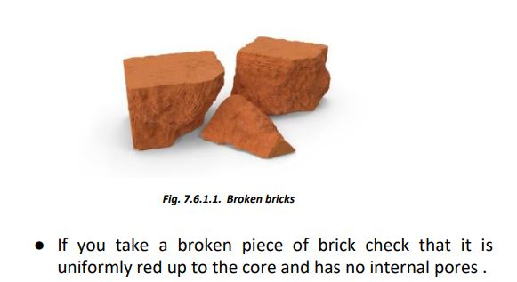
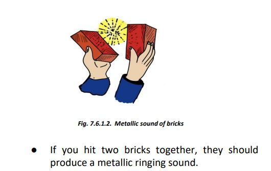
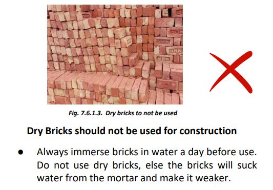
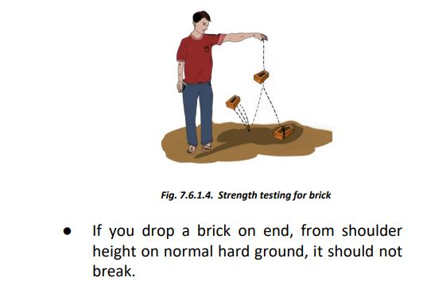
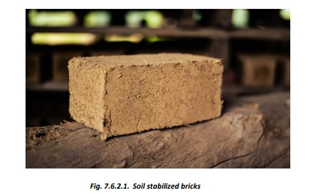
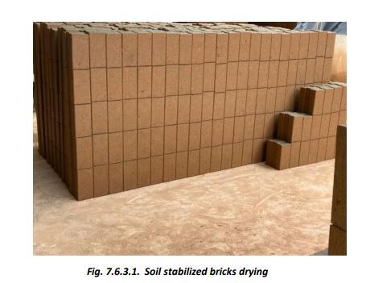

Bricks
1 Burnt Bricks
   2 Sun-Dried Stabilized Bricks

Sun-dried Stabilized Bricks:
To check suitability of local soil for making sun-dried bricks, make a 3-inch diameter ball of moist clay in hand and allow it to dry. If the soil is too sandy, the ball will break under pressure between fingers; if too clayey, it will develop cracks on drying. Suitable clay gives a strong, crack-free ball, with around 35-40% clay and silt, and the rest as fine sand. Bricks can be stabilized with lime/cement and mixed thoroughly.
These bricks have lower strength compared to fired bricks and are affected by moisture. They can be used in dry conditions with cement-sand mortar under guidance. In dry regions, 35 cm thick load-bearing walls can be built with clay bricks (strength: 20 kg/sq cm or better) in cement mortar for two-story houses, with appropriate EQ and moisture protection measures.
Moisture protection can be achieved with ferro-cement treatment or plastering for better longevity and finish.
3 Stabilized Soil Brick

Cement-lime stabilized soil bricks can also be cast on-site in regions where good clay is available but burnt clay bricks or cement-lime stabilized bricks are costly or unavailable.
- Soil Analysis: Dissolve 1/3 glass of soil in 3/4 glass of water, mix thoroughly, and let it settle for 24 hours. The clay+silt should be 30-40% of the total.
- Adjustment: If clay+silt exceeds 40%, add sand. For stabilization, mix 5-6% cement or 6% lime by soil weight and knead with the required water.
- Brick/Block Formation: Make the mix slightly wet and use a hand compressor to form bricks/blocks. Let rest for 24-48 hours, then stack up to 3 layers high.
- Curing: Keep the bricks covered and moist for 15 days in warm climates or 20 days in cold climates.
- Masonry Construction: Use the bricks after 30 days when fully dry. Masonry can use 1:6 cement-sand mortar or soil-cement mortar with ~7% cement.
- Water Curing: Start water curing after 24 hours for cement+sand mortar and 36 hours for stabilized clay mortar.